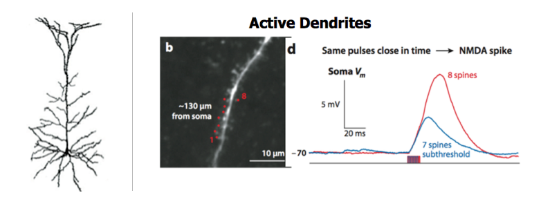
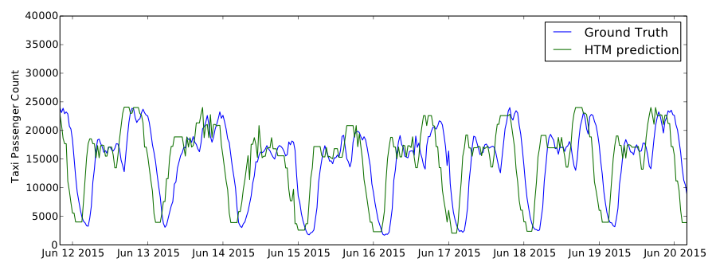
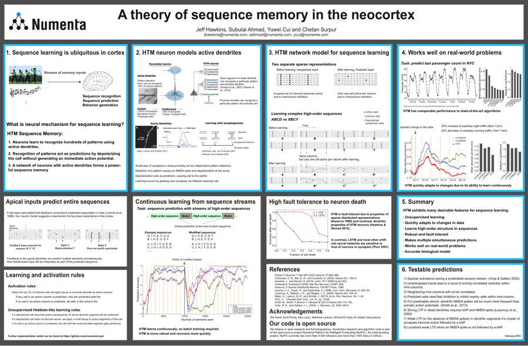

Yuwei Cui•Research Engineer
Yuwei Cui•Research Engineer
Earlier this month, I attended the annual Computational and Systems Neuroscience meeting (Cosyne) in Salt Lake City. Cosyne is a peer reviewed scientific conference that brings experimental and theoretical neuroscientists together to exchange data and ideas. Why does a machine intelligence company attend a neuroscience meeting? Numenta’s approach to machine intelligence starts with a deep understanding of how the neocortex learns. We use the brain as a blueprint. The HTM theory is not only inspired by neuroscience concepts, but also constrained by detailed neuroscience findings. Neuroscientists, using many new tools, have made tremendous advancements in understanding the physiology and connectivity of the brain. We would like to see whether the latest experimental evidences could fit into the HTM theory. If not, how should we revise the theory to be consistent with the experimental observations?
From neuroscience findings to machine intelligence
This year we presented a poster on “a theory of sequence memory in the neocortex.” The ability to recognize and memorize regular temporal patterns from sensory input streams is critical for almost all cortical functions. The topic of neural representations of time and sequence in the cortex was very popular at Cosyne this year, as you can see in the program guide. Our work is unique, as it is not only built on concrete experimental findings from neuroscience and makes a number of experimentally testable predictions, but also achieves compelling performance on real-world sequence learning tasks.
Neurons in the neocortex receive thousands of inputs on their highly elaborated dendritic trees. Unlike most artificial neural network models individual dendritic branches act as active pattern detectors: co-activation of a number of synapses leads to a dendritic spike that can depolarize the cell body for hundreds of milliseconds. This phenomenon of active dendrites has been known for a long time among neuroscientists. A number of presentations at Cosyne modeled the biophysical mechanism underlying dendritic spikes. Nevertheless, the function of dendritic spikes remains unclear and it is not incorporated in most neural network models.
**Right:** Researchers stimulated individual synapses optically and measured voltage responses at the soma. Simultaneous stimulation of enough synapses (8 in this case) caused a large and sustained depolarization at the cell body (Major et al., 2013, Annu Rev Neurosci).
The HTM sequence memory model utilizes the active dendrites of cortical neurons to learn sequences from data streams. Temporal sequences are learned via growth of new synapses and are represented with sparse distributed representations. Predictions of future inputs are made through the generation of dendritic spikes. The resulting model gives rise to a powerful sequence memory, which not only achieves comparable performance to state-of-the-art machine learning algorithms, but also exhibits many desirable attributes for real-world sequence learning with streaming data.
Interactions with other neuroscientists
Our work attracted wide interest among neuroscientists. Several experimental neuroscientists were very excited to learn about the important functional role of the long observed phenomena of dendritic spikes. Some even expressed interest in running more specific experiments to test the learning mechanisms used in HTM. We also benefited by discussing with other neuroscientists. For example, by talking with researchers that build detailed biophysical models of active dendrites, we now have a better idea of how HTM would work on a detailed biophysical level.
I found quite a few other presentations at Cosyne that were related to HTM. Prof. Michael Berry’s group from Princeton University recorded a large population of neurons in the primary visual cortex during the presentation of image sequences. The observed behavior of the real neural population matches many aspects of the HTM sequence memory model. Prof. Jose Carmena from UC Berkeley presented a novel paradigm for brain-machine interface where subjects continuously learn to control a small set of neurons. Interestingly, the performance over time looks quite similar to that of the HTM model on a continuous learning task. These studies, and many others, give us valuable insights on the development of future HTM algorithms. We would like to keep collaborating with the neuroscience community. We believe doing so would tremendously speed up our progress on machine intelligence.
I encourage you to take a look at our poster and the accompanying paper. Please also check out this recently published Frontiers Neural Circuit paper to learn about the HTM theory. Let me know what you think of it by contacting ycui@numenta.com and join the discussion of HTM in the NuPIC community.
Yuwei Cui•Research Engineer